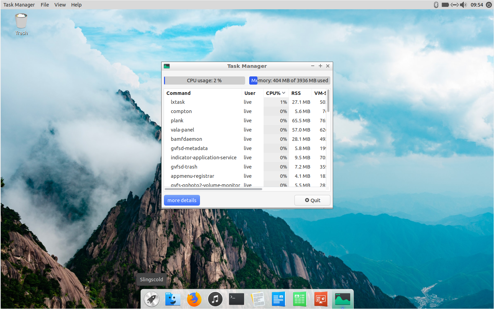
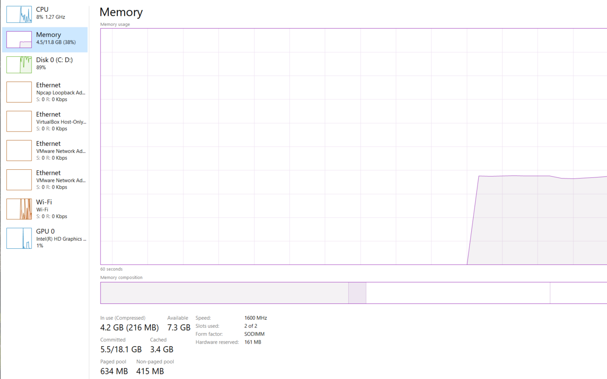

ValeOS enables eco-friendly computing out of the box to help reduce your carbon footprint by prolonging battery life,
reduces resource load and power usage, and can even revive older computers without sacrificing the aesthetics or performance of
the operating system.
Based on Ubuntu, a free open source operating system, we aimed to strip down all bloat and redesign from the bottom up,
making sure you have all the functionalities a power user needs while keeping CPU and memory usage to a minimum.
At idle, ValeOS barely uses 400 MB of system memory and has low CPU load.
By comparison, Windows at idle using anywhere from 2 to 4GB of memory and regularly spikes in CPU load.
|  |  |
Bundled with the operating system is a set of the best lightweight Linux programs that enables you to work on everyday tasks
and be productive. The simplicity and elegance of our user interface combined with powerful programs and repositories of
Ubuntu serves to provide a clean yet powerful user experience in ValeOS.